บทนิยาม ถ้า y = f(x) เป็นฟังก์ชันที่มีโดเมนและเรนจ์เป็นสับเซตของจำนวนจริง และ 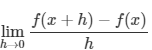 หาค่าได้ แล้ว เรียกค่าของลิมิตนี้ว่า " อนุพันธ์ (derivative) ของฟังก์ชัน f ที่ x " เขียนแทนด้วย 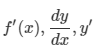 หรือ 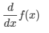
จากบทนิยาม จะได้ว่า 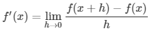
- 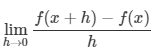 หาค่าได้ จะกล่าวว่า ฟังก์ชัน f มีอนุพันธ์ที่ x หรือ ฟังก์ชัน f หาอนุพันธ์ได้ที่ x
- 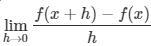 หาค่าไม่ได้ จะกล่าวว่า ฟังก์ชัน f ไม่มีอนุพันธ์ที่ x หรือ ฟังก์ชัน f หาอนุพันธ์ไม่ได้ที่ x
สัญลักษณ์ที่นิยมใช้แทนอนุพันธ์ของฟังก์ชัน f ที่ x นอกจาก f′(x) คือ 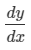 นั้น อ่านว่า "ดีวายบายดีเอ็กซ์"
EX ตัวอย่างการหาอนุพันธ์ของฟังก์ชันโดยนิยาม
โจทย์ กำหนด 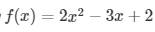 จงหาอนุพันธ์ของฟังก์ชัน f ที่ x
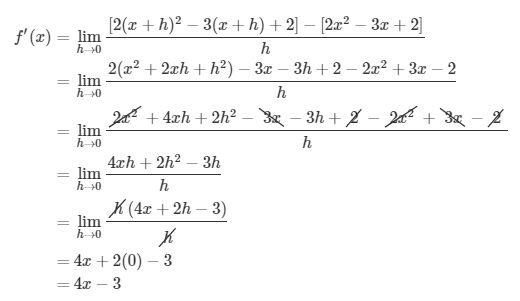
ตอบ f′(x)=4x−3
สำหรับ a ใดๆ ที่อยู่ในโดเมนของ f อนุพันธ์ของฟังก์ชัน f ที่ x=a คือ 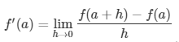 หรืออาจใช้สัญลักษณ์ 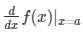 แทน f′(a) ซึ่งในการหาค่า f′(a) อาจทำการหาอนุพันธ์ของฟังก์ชัน f ที่ x ใดๆ หลังจากนั้นแทน x ด้วย a เช่น
EX ตัวอย่างการหาอนุพันธ์ของฟังก์ชันที่ x=a
กำหนด จงหาอนุพันธ์ของฟังก์ชัน f ที่ x=2
วิธีทำ ในตัวอย่างนี้ เราอาจหา 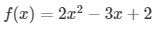 โดยตรงก็ได้ แต่ในกรณีนี้เราทราบแล้วว่า
เราสามารถแทน x ด้วย 2 จะได้
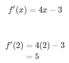
ตอบ f′(2)=5
EX ตัวอย่างการจัดลิมิตให้อยู่ในรูปของอนุพันธ์
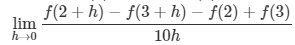
วิธีทำ ทำการจัดรูปลิมิตให้อยู่ในรูปของอนุพันธ์
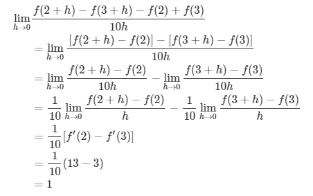
ตอบ 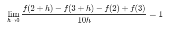
จากบทนิยามของอนุพันธ์ จะได้ว่า f′(x) คือความชันของเส้นโค้ง y=f(x) ที่จุดใดๆ นั่นเอง และสำหรับ a ใดๆ ที่อยู่ในโดเมนของ f จะได้ว่า f′(a) คือความชันของเส้นโค้ง y=f(x) ที่จุด (a,f(a)) เช่น จาก ตัวอย่างนี้ เราจะได้ว่าความชันของเส้นโค้ง y=2x2−3x+2 ที่จุด (2,4) คือ f′(2)=5
ถ้ากำหนดฟังก์ชัน y=f(x) มีจุด P(x1,f(x1)) และจุด Q(x2,f(x2)) อยู่บนกราฟของฟังก์ชัน แล้ว ความชันของเส้นตรงที่ผ่านจุด P และ Q คือ 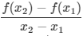 เรียกอัตราส่วนนี้ว่า อัตราการเปลี่ยนแปลงเฉลี่ยของ y เทียบกับ x เมื่อค่าของ x เปลี่ยนจาก 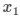 เป็น 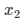 นิยามได้ดังนี้
1. อัตราการเปลี่ยนแปลงเฉลี่ยของ y เทียบกับ x ในช่วง 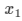 ถึง 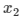 คือ 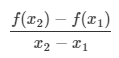
EX ตัวอย่างการหาอัตราการเปลี่ยนแปลงเฉลี่ย
จงหาอัตราการเปลี่ยนแปลงเฉลี่ยของ 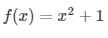 เมื่อค่า x เปลี่ยนจาก x1=1 เป็น x2=3
วิธีทำ อัตราการเปลี่ยนแปลงเฉลี่ยของ y เทียบกับ x ในช่วง 1 ถึง 3 คือ
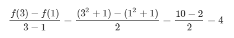
ตอบ อัตราการเปลี่ยนแปลงเฉลี่ยของ y เทียบกับ x ในช่วง 1 ถึง 3 เท่ากับ 4
EX ตัวอย่างการหาอัตราการเปลี่ยนแปลงขณะที่ x=a
กำหนด f(x)=4x2+3 จงหาอัตราการเปลี่ยนแปลงขณะที่ x=2
วิธีทำ อัตราการเปลี่ยนแปลงขณะที่ x=2คือ
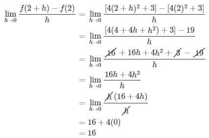
ตอบ อัตราการเปลี่ยนแปลงขณะที่ x=2 เท่ากับ 16